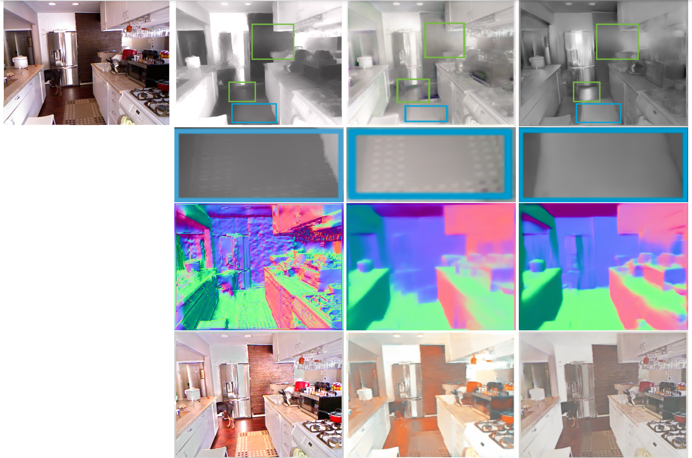
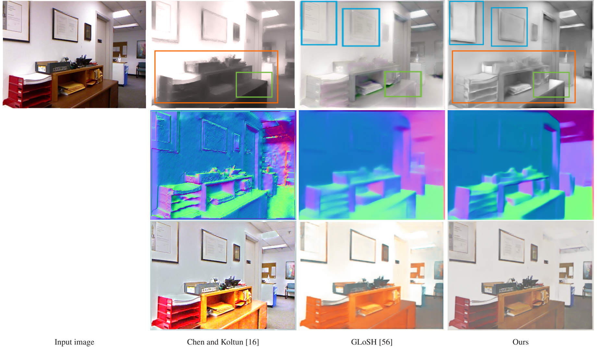
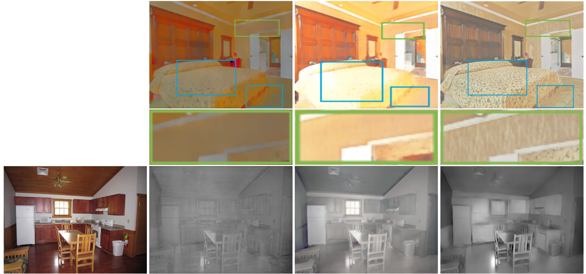
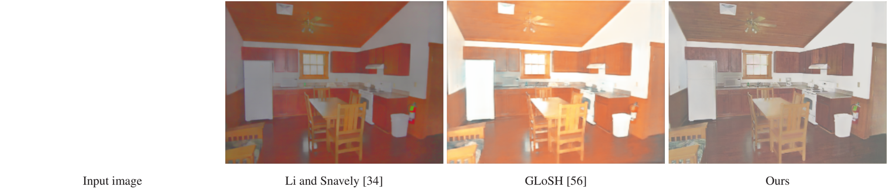
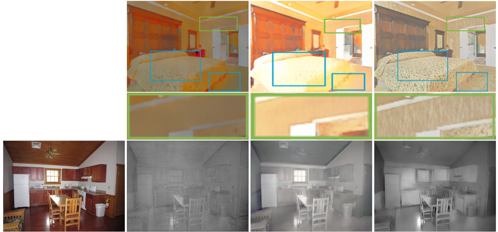
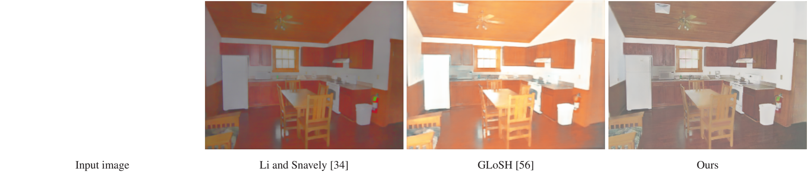

Comparison with SOTAs
 
The first, second and third rows are estimated shading images, predicted or ground-truth normal maps, and estimated reflectance images. We and GLoSH (SUNCG+IIW+SAW) predict surface normals by the deep neural networks, while Chen and Koltun compute surface normals from ground-truth depth. Geometry contours in our predicted shading images are the sharpest. Blue rectangles: we remove the most textures from the predicted shading. Green rectangles: we recover the highlights best. Orange rectangles: the intensity of predicted shading from Chen and Koltun is strongly affected by that of the input image, while the intensity of our predictions is more coherent in the neighborhood. Our reflectance images are also better than those of Chen and Koltun, as many shading variations are shifted into their reflectance.
 



We compare our results with Li and Snavely’s (CGI+IIW+SAW), and GLoSH (SUNCG+IIW+SAW). For each sample, the first row shows predicted shading images, and the second row shows predicted reflectance images. Blue rectangles: our shading results have the least texture residuals. Orange rectangles: our method best captures the shading effects. Green rectangles: our method predicts the most detailed reflectance as well as the most smooth shading. More results are presented in the supplementary material.